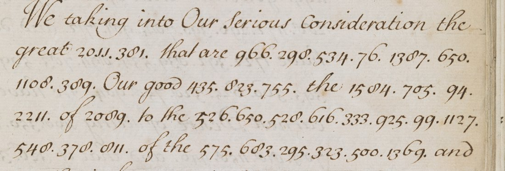

At a glanceExisting decipherment · complete
- The document
- Signed instructions of Queen Anne to the Earl of Peterborough, St James’s, 22 February 1711/2 (1712 in modern reckoning), not a letter.
- Where
- British Library Add MS 4107, f. 184; DECODE R4878.
- The cipher
- Clear English with every sensitive phrase in numbers: 61 runs, 414 groups, 242 different.
- How it was read
- No key among the 155 transcribed British keys on DECODE fits. The whole text is printed in Parke’s Bolingbroke (1798), pp. 310–311, and all 61 runs fall into place in it.
- What it says
- Peterborough was to intercept the Electoral Prince of Saxony on his way to Rome, keep him Protestant and help him escape.
- Still open
- The code table, rebuilt only to about twenty values.
01 The document
Add MS 4107 keeps the instructions Peterborough actually received, signed by the Queen at the head and the foot. The heading is in clear: Instructions for Our Right Trusty and Right Welbeloved Cousin and Councillor Charles Earl of Peterborow and Monmouth. Given at Our Court at St James’s the Two and Twentieth day of February 1711/2 in the Tenth Year of Our Reign. The date is Old Style, so the year is 1712, and DECODE’s range 1711–1712 refers to this one letter.
The clerk wrote the body in clear and put the words that mattered into numbers, separated by points: We taking into Our Serious Consideration the great 2011.381. that are 966.298.534.76.1387.650.1108.389. Our good 435.823.755. the 1584.705.94.2211. of 2089. In total there are 61 runs of 1 to 18 groups, 414 groups altogether, of which 242 are different, ranging from 76 to 2269. The clerk wrote 8 as a looped ơ. Two groups at the gutter of f. 184v have lost their last digit. Apart from the crop below, the British Library images are not reproduced here. They can be seen on DECODE after logging in.

02 The printed text and the match
Parke printed Bolingbroke’s papers in 1798 from the Secretary’s office copies. In a note to a letter of St John to the Queen he adds “Lord Peterborough’s instructions was as follow”, followed by the whole text with the same heading, the same date and the same closing A. R. The clear passages of the manuscript read word for word as in the print, and each code run stands where the print has a phrase:
| Run | Code | Printed text |
|---|---|---|
| 1 | 2011.381 | endeavours |
| 4–5 | 1584.705.94.2211 · 2089 | Electoral Prince · Saxony |
| 9 | 724.1604.678.1219.563.393.1893 | dishonour the Protestant interest |
| 17 | 839.534.678.523.412.303.1076.833.179 | you to the said Prince whom |
| 18 | 609.1415.705.564.1369 | his arrival at Rome |
| 43 | 385.97.894.1098 | himself |
| 44 | 422.474.373.900.609.507.1373 | abjuring his religion |
| 50–51 | 1799.900.894 · 465.355.385.466.615.755 | rescuing him · hands he is in |
| 55 | 886.354.839.1053.534.523.308.678.1285.500.1369.738 | given you leave to see the city of Rome |
| 60 | 720.425.295.335.534.2101 | come back to Turin |
The alignment for all 61 runs is in alignment.tsv. The recurring groups confirm it: they mean the same thing wherever they occur. 534 is to at all eight of its places, and 678 the, 839 you, 894 him, 466 he, 609 his, 981 your, 1068 our, 783 on and 820 this are each constant across three to seven places. 1373 is religion in all three places, and 1219.563 is Protestant twice. The same syllable 422 begins both abandon and abjuring. Before the print was found, four of these values (894 him, 466 he, 894.1098 himself, 981 your) had already been guessed from the clear words around them.
The code pads the text heavily with nulls. There are 414 groups for 232 printed words, and a single word can take four or five groups: his is written 328.333.388.467 once, and him 326.332.349.467.2269. Some words have more than one group (Prince is 1076 or 2211; Rome is 1369 or 519.488). The numbers do not follow the alphabet (466 he, 609 his, 894 him, 981 your), so this is not one of the printed one-part forms kept in SP 106/7. Two single groups have no word in the print: 91 after church of Rome and, and 261 in affairs 261 bring him. They are either nulls or small differences between the draft and the fair copy.
03 What the instructions say
The text below is as printed by Parke, with his spelling modernised. The words in bold are the ones in code in the manuscript.
We taking into our serious consideration the great endeavours that are used to pervert our good cousin, the Electoral Prince of Saxony, to the superstitious worship of the church of Rome, and the infinite prejudice and dishonour the Protestant interest would suffer if so considerable a Prince, in whose country the reformation first began, should abandon the principles of our most holy religion, think it a duty incumbent on us to prevent, as far as in us lies, so fatal a blow. For that end, we have taken the resolution of sending you to the said Prince, whom you are to join, if possible, before his arrival at Rome, yet in such a manner that your falling-in with him may appear merely accidental: but whether you meet him on the road, or find him at Rome, you shall take a proper opportunity to deliver our letter to him, accompanying it with expressions of our friendship and real concern for his prosperity. You shall endeavour to insinuate yourself into his good opinion, and, as occasion offers, urge the strongest arguments you can for keeping him steady to the Protestant religion. If you find your representations make any impression upon his mind, you shall then open to him the subject of your commission, and declare that we have dispatched you to him on purpose to let him know that we have still the same earnest desire of seeing him which we have so often expressed; and that if he persists in those good resolutions he formerly had, to adhere firmly to the religion in which he was educated, he may depend upon a friendly and honourable reception in our Court, in case his inclination or the situation of his affairs bring him this way. If, upon discourse with him, you shall discover that he apprehends himself under a necessity of abjuring his religion, to avoid the dangers and difficulties he will otherwise be exposed to, and that he has an inclination to make his escape, you may concert with him the proper measures for rescuing him out of the hands he is in, and bringing him safe to our dominions, or those of any other Protestant Prince or State.
If you should happen to be arrived at Turin when these our instructions are delivered to you, you shall acquaint the Duke of Savoy that, in compliance with your request, we have given you leave to see the city of Rome; for you are by all means to prevent any suspicion of the true intent of your going thither.
The nature of this service in which we now employ you is such, that we can neither enjoin you to correspond with either of our Secretaries of State, nor limit the time of your return; we therefore leave it entirely to your discretion and prudence to come back to Turin when you shall judge your attendance on the Prince of no further use.
The Prince was Frederick Augustus, son of Augustus the Strong and later Augustus III of Poland. Parke’s note explains that, expecting to marry a Catholic archduchess, the Prince “was about to set off for Rome, to abjure the Protestant religion”. The clerk put into code everything that named the Prince, the religion, or the mission and its cover story. The courtesies and the instructions about conduct stayed in clear.
04 What remains uncertain
- The code table. Only about twenty values are established. No key on DECODE fits: all of SP 106 boxes 6–8 and every transcribed British, TNA or Bodleian key dated 1690–1730 were tested against 894 him, 466 he, 1098 self and 981 your. The name list in BL Add MS 61575 ff. 62–65 is Marlborough’s and is not this code.
- Groups 91 and 261, which have no counterpart in the print, and the final digits of the two gutter groups (52?, 33?).
- Small differences in wording between Parke’s office draft and the signed original cannot be excluded inside the code runs. The run lengths do not show any.
Full texts
The transcription and the decryption of every document on this page, so that the reading can be used and checked. Short files are shown here; all are in the repository.
Instructions to Peterborough, St James's, 22 Feb 1711/12
Queen Anne's instructions to the Earl of Peterborough: the coded passages hide his real errand, to meet the Electoral Prince of Saxony (the future Augustus III) on his way to Rome to abjure Protestantism, urge him to remain Protestant and, if he wished to flee, concert his rescue to England or another Protestant state, under cover of a visit to Rome. The clear text is printed from the office draft in Parke's Bolingbroke correspondence (1798, vol. 1 pp. 310-311); alignment.tsv matches all 61 code runs to it.
Transcription
# BL Add MS 4107 ff.184-185 (DECODE R4878). Instructions, Queen Anne to Peterborough, St James's 22 Feb 1711/12. # Clear text as written; code groups as numbers. The scribe's looped 8 read as 8. '?' = digit lost in the gutter. # Heading (clear): Instructions for Our Right Trusty and Right Welbeloved Cousin and Councillor Charles Earl of Peterborow and Monmouth. Given at Our Court at St James's the Two and Twentieth day of February 1711/2 in the Tenth Year of Our Reign. (signed Anne R) ## p1 f.184r We taking into Our Serious Consideration the great 2011.381. that are 966.298.534.76.1387.650.1108.389. Our good 435.823.755. the 1584.705.94.2211. of 2089. to the 526.650.528.616.333.925.99.1127.548.378.811. of the 575.683.295.323.500.1369. and 91. the infinite prejudice and 724.1604.678.1219.563.393.1893. would suffer if so considerable a 1076.755. whose Country the 516.738.486.1384.883.167.426.460.354. should 422.850.783.676.304.1358.649.450. of Our Most 469.624.267.1373. think it 279.1154.755.295.965.426.778.783.823.534.651.968.390. as far as 755.401.381.483.450. so 453.393.705.280.1565. For that end We have taken the Resolution of sending 839.534.678.523.412.303.1076.833.179. you are to joyn if possible before 609.1415.705.564.1369. yet in such manner that 981.885.900.83.755. with 894. may appear 488.516.624.421.434.441.354.531.343. But whether you meet 894.783.678.519.423.499.1022.468.349.564.519.488. you ## p2 f.184v you shall take a proper opportunity to 1579.1068.1479.534.894.421.580.504.355.413.900.616.1113.697. Expressions of Our Friendship and real Concern for 609.789.664.449.1043. you shall endeavour to 1895.310.1408.1183.324.615.1031.1779. and as occasion offers urge the strongest Arguments you can for 763.900.325.758.528.446.413. to the 789.532.528.563.394.1373. If you find 981.516.651.812.849.381. make any Impression upon 609.1199. you shall then open to 326.332.350.678.526.288.472.296.390.784.981.1712. and declare that We have 1722.392.839.534.894.783.509.376.508.523.393.360.625.328.758.904. We have still the same earnest Desire of seeing 468.350.1401.545.1036.52?.784.818.1158.446. and that if 326.310.79. persist in those good Resolutions 466.738.488.378.624.611. to adhere firmly to the 516.483.462.783.755.686.33?.575.324.304.1116.446.480.432.815.466. may depend upon a friendly 909.1604.1130.516.433.365.1384.755.1068.861. in case 328.333.388.467. Inclination or the Situation of 468.383. affairs 261. bring 894.820.690.2268.1827. If upon discourse with 468.349.787. you shall discover that 466.135.957. apprehend 385.97.894.1098. under a necessity of 422.474.373.900.609.507.1373. to avoid the Dangers & difficultys 79.326.306.259.627. will otherwise be exposed to, and that 1897.325.309.893.268. an Inclination to 1055.609.450.432.505. you may concert with 326. ## p3 f.185r 332.349.467.2269. the proper measures for 1799.900.894. out of the 465.355.385.466.615.755. and bringing 326.758.808. into 1068.582.489.495.783.383.499.1102.500.992.1354.1219.563.391.2211.360.378.1095. If you should happen to be arrived at Turin when these Our Instructions are delivered to you, you shall acquaint the Duke of Savoy that in compliance with 413.359.683. Request We have 886.354.839.1053.534.523.308.678.1285.500.1369.738. you are by all means to endeavour to prevent any 951.332.1384.1071.1016.755.818.391.500.981.602.900.897.198.676.331.676.449. The nature of 820.1802.755.1401.545.921.1443.839. is such that We can neither 590.898.354.413.356.400.534.1143.1113.1018.500.1521.562.383.360.316.1095. nor limit the time of 981.516.1243. We therefore leave it entirely to your discretion and Prudence to 720.425.295.335.534.2101. when you shall judge 839.376.564.818.845.309.1607.783.678.1076.500.635.314.683.678.379.966.
Decryption
off fcr Rome, to abjure the Proteftant religion. Lord Peter- borough's inftruclions was as follow : " Jnftru£tions to our right trufly and right well- « ANNF "R beloved coufin and counfellor. Charles, Earl of ' Peterborow and Monmouth : Given at our Court at St. James's, aid of February, 1711-12. " The raking into our ferkms confideration the great endeavours that are ufed to pervert our good coufui, the Electoral Prince of Saxo ny, to the fuperftitious worfhip of the church of Rome, and the infinite prejudice and diflionour the Proteftant intcreft would fuffer, if fo confiderable a Prince, in whofe country the ref<>r- cnatioir CORRESPONDENCE, &C. 3! I which your Majefty received from the Em- prefs Dowager Amelia on the late Em- peror's death. Mr. Whit worth was direct- ed fome time ago to make an excufe for your Majefty's delay in writing. mation firft began, fhould abandon the principles of our moft holy religion, think it a duty incumbent on us to prevent, as far as in ws lies, fo fatal a blow. For that end, we have taken the refolu- tion of fending you to the faid Prince, v/hom you are to join, if pofTible, before his arrival at Rome, yet in fuch a manner, that your falling-in with him may appear merely accidental : but whether you meet him on the road, or find him at Rome, you lhall take a proper opportunity to deliver our letter to him, accompanying it withexpretfions of our friendship, and real concern for his prof- perity. You fhail endeavour to infinuate yourfelf into his- good opinion, and, as occafion offers, urge the ftrongeft argumems you can for keeping him fteady to the Proteflant religion. If you find your reprefentations make any impreffion upon his mind, you lhall then open to him the fubjeft of your commUIion, and declare, that we have difpatched you to him on purpofe to let him know that we have ftili the fame earneft defire of feeing him which we have fo often exprefled ; and that if he perfifts in thofe good refolu- tions he formerly had, to adhere firmly to the religion in which he was educated, he may depend upon a friendly and honourable reception in our Court, in cafe his inclination or the fituationof his affairs bring him this way. If, upon difcourfe with him, you ihall difcover that he apprehends himfelf under a neceffity of ab- juring his religion, to avoid the dangers and difficulties he will otherwise be expofed to, and that he has an inclination to make his efcape, you may concert with him the proper meafures for refcuing him out of the hands he is in, and bringing him fafe to our dominio'ns, or thofe of any other Proteftant Prince or State. "If you fhould happen to be arrived at Turin when thefe our
Decryption
run groups n printed text (Parke 1798) 1 2011.381 2 endeavours 2 966.298.534.76.1387.650.1108.389 8 used to pervert 3 435.823.755 3 cousin 4 1584.705.94.2211 4 Electoral Prince 5 2089 1 Saxony 6 526.650.528.616.333.925.99.1127.548.378.811 11 superstitious worship 7 575.683.295.323.500.1369 6 church of Rome 8 91 1 [91: no word in print] 9 724.1604.678.1219.563.393.1893 7 dishonour the Protestant interest 10 1076.755 2 Prince 11 516.738.486.1384.883.167.426.460.354 9 reformation first began 12 422.850.783.676.304.1358.649.450 8 abandon the principles 13 469.624.267.1373 4 holy religion 14 279.1154.755.295.965.426.778.783.823.534.651.968.390 13 a duty incumbent on us to prevent 15 755.401.381.483.450 5 in us lies 16 453.393.705.280.1565 5 fatal a blow 17 839.534.678.523.412.303.1076.833.179 9 you to the said Prince whom 18 609.1415.705.564.1369 5 his arrival at Rome 19 981.885.900.83.755 5 your falling-in 20 894 1 him 21 488.516.624.421.434.441.354.531.343 9 merely accidental 22 894.783.678.519.423.499.1022.468.349.564.519.488 12 him on the road or find him at Rome 23 1579.1068.1479.534.894.421.580.504.355.413.900.616.1113.697 14 deliver our letter to him accompanying it with 24 609.789.664.449.1043 5 his prosperity 25 1895.310.1408.1183.324.615.1031.1779 8 insinuate yourself into his good opinion 26 763.900.325.758.528.446.413 7 keeping him steady 27 789.532.528.563.394.1373 6 Protestant religion 28 981.516.651.812.849.381 6 your representations 29 609.1199 2 his mind 30 326.332.350.678.526.288.472.296.390.784.981.1712 12 him the subject of your commission 31 1722.392.839.534.894.783.509.376.508.523.393.360.625.328.758.904 16 dispatched you to him on purpose to let him know that 32 468.350.1401.545.1036.52?.784.818.1158.446 10 him which we have so often expressed 33 326.310.79 3 he persists 34 466.738.488.378.624.611 6 he formerly had 35 516.483.462.783.755.686.33?.575.324.304.1116.446.480.432.815.466 16 religion in which he was educated he 36 909.1604.1130.516.433.365.1384.755.1068.861 10 and honourable reception in our Court 37 328.333.388.467 4 his 38 468.383 2 his 39 261 1 [261: no word in print] 40 894.820.690.2268.1827 5 him this way 41 468.349.787 3 him 42 466.135.957 3 he 43 385.97.894.1098 4 himself 44 422.474.373.900.609.507.1373 7 abjuring his religion 45 79.326.306.259.627 5 he 46 1897.325.309.893.268 5 he has 47 1055.609.450.432.505 5 make his escape 48 326 1 him (first group, foot of f.184v) 49 332.349.467.2269 4 (him, continued at the head of f.185r) 50 1799.900.894 3 rescuing him 51 465.355.385.466.615.755 6 hands he is in 52 326.758.808 3 him safe 53 1068.582.489.495.783.383.499.1102.500.992.1354.1219.563.391.2211.360.378.1095 18 our dominions or those of any other Protestant Prince or State 54 413.359.683 3 your 55 886.354.839.1053.534.523.308.678.1285.500.1369.738 12 given you leave to see the city of Rome 56 951.332.1384.1071.1016.755.818.391.500.981.602.900.897.198.676.331.676.449 18 suspicion of the true intent of your going thither 57 820.1802.755.1401.545.921.1443.839 8 this service in which we now employ you 58 590.898.354.413.356.400.534.1143.1113.1018.500.1521.562.383.360.316.1095 17 enjoin you to correspond with either of our Secretaries of State 59 981.516.1243 3 your return 60 720.425.295.335.534.2101 6 come back to Turin 61 839.376.564.818.845.309.1607.783.678.1076.500.635.314.683.678.379.966 17 your attendance on the Prince of no further use
05 Sources
- British Library, Add MS 4107 ff. 184r, 184v, 185r, via DECODE R4878 (images by login; not in the public domain).
- Gilbert Parke (ed.), Letters and Correspondence, Public and Private, of the Right Honourable Henry St. John, Lord Visc. Bolingbroke, vol. 1 (London 1798), pp. 310–311 (archive.org).
Transcription, alignment and notes: targets/anne1711/.